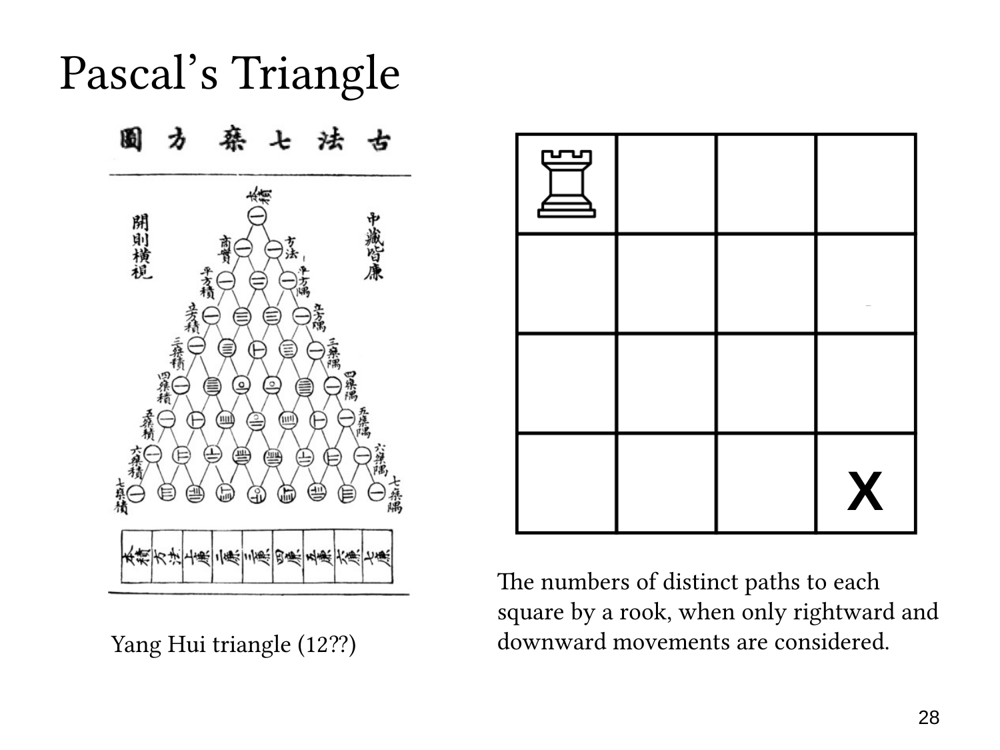

L1.7 · 第 28 页讲解原文
查看这一页课件

帕斯卡三角形与棋盘路径
这一页把 Pascal’s Triangle 与棋盘上的路径联系起来。左边是杨辉三角形的历史图示，右边从左上角的车出发，只考虑向右或向下到达各格的路线。
为了与帕斯卡三角形对应，这里把路径记作逐格移动的序列。设 P(r,c) 是从起点到第 r 行、第 c 列的路径数。到达一个内部格子的最后一步只有两种可能：从左边向右，或从上边向下。因此
P(r,c)=P(r,c−1)+P(r−1,c).
这两类路径互不重叠，正好可以用 sum rule 相加。最上行与最左列都只有一条路径，所以边界值为 1。
以图中的 4×4 棋盘为例，到右下角需要 3 次向右和 3 次向下。六步中选出三步向右即可确定整条路径，因此路径数为
(36)=20.
各格的计数依次为
1111123413610141020.
它们服从与 Pascal’s identity 相同的递推关系。
需要留意，国际象棋中的车通常可以一次跨过多格；本页的帕斯卡三角形模型按相邻格的单位步数记录路线。若把不同长度的跳跃也算作不同动作，就需要另建计数模型。
核心联系是：组合数既能表示“从若干位置中选择”，也能表示“由两种方向组成的路径”。